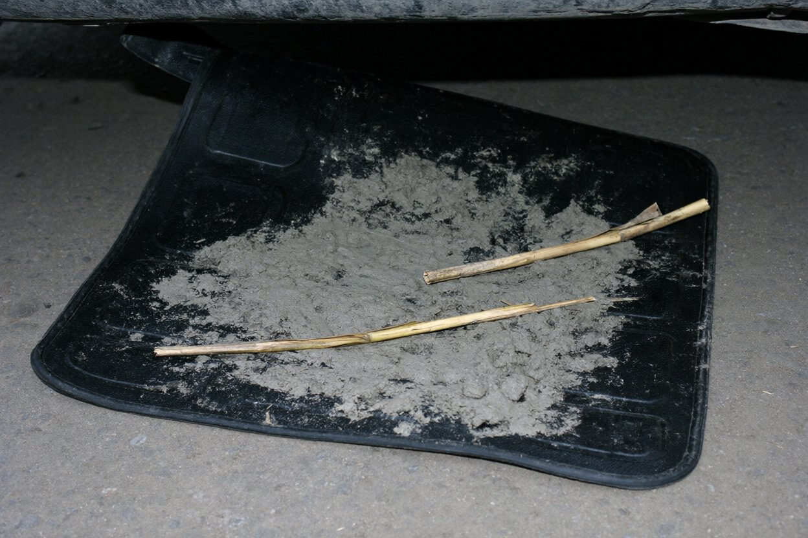

| Об'єкт | Daewoo Lanos, сріблястий, АХ 3307 ВІ (власність ПП «Сова-Детектив»), двір офісу, Пушкінська, 40 |
| Коли | пт 2.11.2007, 19:20–19:50, штучне освітлення двору |
| Хто | Шульга В.І. (сам, з фотоапаратом). Автомобіль відчинено запасними ключами з сейфа |
| Примітка | Рябоконь К. у цей час у моєму кабінеті пише пояснювальну про пробіг; про огляд не знає |
Салон. Пічка справна, у салоні чисто, пахне тютюном і кавою. Термос на панелі. Сидіння водія зсунуте далеко назад. Під килимком водія — засохлий річковий мул (кіркою, по краях килимка) і два стебла сухого очерету (фото 1).
Багажник. Спортивна сумка, чорна, порожня. Домкрат, трос, аптечка (термін до 2008).
Кишеня дверцят водія. Пачка чеків, перев'язана гумкою; перелічено за датою:
| Дата, час | Продавець | Що | Сума, грн |
|---|---|---|---|
| 26.10 07:41 | АЗС «Паливо-Плюс», Московський пр. | А-95, 30,0 л | 141,00 |
| 26.10 13:52 | «Пузата хата», Сумська | обід | 38,60 |
| 26.10 18:34 | «Карнавал», Сумська, 51 | маска венец. чорн. | 18,00 |
| 27.10 14:40 | АЗС «Паливо-Плюс», Московський пр. | А-95, 25,0 л | 117,50 |
| 30.10 17:56 | АЗС «Паливо-Плюс», Салтівське шосе | А-95, 20,0 л | 94,00 |

Чек «Карнавалу» знято на ксерокс окремою вкладкою, оригінал — у теці справи. Інших слідів у салоні не виявлено; бардачок — документи на авто, карта Харківщини, ліхтарик.